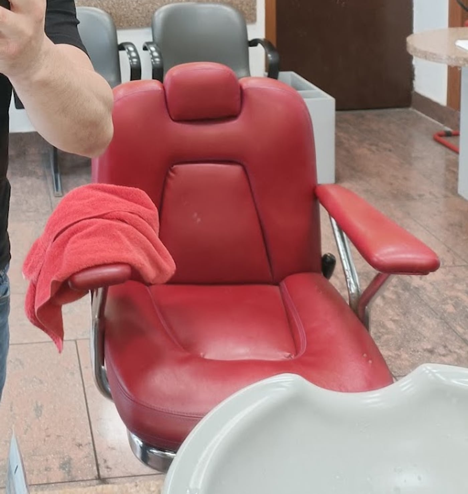
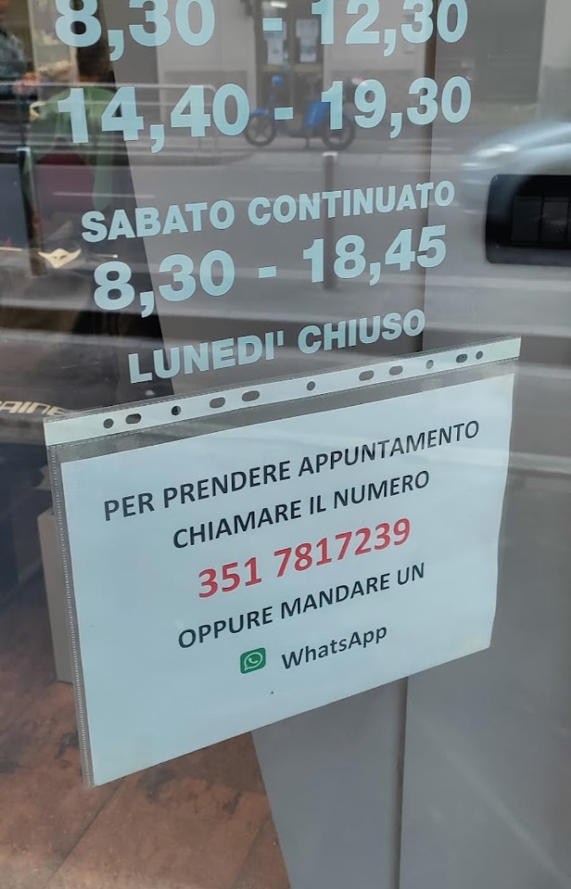

Barbiere · Dergano · Via Imbonati 75
Tutto comincia
da una linea
5,0 su 136 recensioni Google
Da Linea Uomo il taglio si lavora a forbici, con calma. Chi ci va lo racconta così: «mi ha ascoltato e ha lavorato a forbici con grande precisione, cosa che ormai pochi sanno fare».
Non è una passata
di macchinetta.

Cinque stelle piene, centotrentasei volte
«Barbiere bravo e attento, mi ha ascoltato e ha lavorato a forbici con grande precisione, cosa che ormai pochi sanno fare. Si vede che è una persona con tanta esperienza.»
Vito Badalamenti · Google
«Oramai Luca è il mio barbiere di fiducia qui a Milano. La chiacchiera durante il taglio si scambia sempre volentieri.»
Giuseppe Messina · Local Guide
«Conosco Luca da tanti anni: competenza, serietà, simpatia sempre al top.»
Recensione Google
«This is the first time I'm getting a haircut in Italy and I think this is the best haircut experience I've ever had.»
kanhong Tan · Google
Come funziona
Si prende appuntamento con un messaggio
Sulla vetrina c'è un foglio scritto a mano: per prendere appuntamento si chiama il numero, oppure si manda un WhatsApp. Niente code, niente attese: si arriva quando è il proprio turno.
Scrivi su WhatsApp Oppure chiama il 351 781 7239- Serve sempre l'appuntamento?
- È il modo che il salone indica sulla vetrina: un messaggio o una telefonata al 351 781 7239.
- Quando è chiuso?
- Domenica e lunedì. Il sabato invece è orario continuato, dalle 8:30 alle 18.
- Dove si trova?
- In Via Carlo Imbonati 75, a Dergano, a pochi minuti a piedi dalla fermata M3 Dergano.

La bottega
Via Carlo Imbonati 75
Dergano, Milano · a pochi passi dalla M3 Dergano
Chiuso
- lunedìchiuso
- martedì08:30–12:00 · 14:45–19:15
- mercoledì08:30–12:00 · 14:45–19:15
- giovedì08:30–12:00 · 14:45–19:15
- venerdì08:30–12:00 · 14:45–19:15
- sabato08:30–18:00
- domenicachiuso